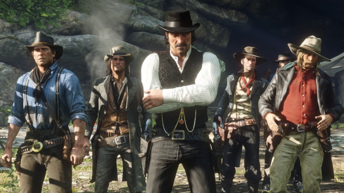

Tolga TOPUZ
Hakkımda
Merhaba Ben Tolga Topuz! Ankara'da yaşıyorum. Bilim kurgu filmlerini, dizi izlemeyi ve oyun oynamayı seviyorum. Web geliştirme ile ilgileniyorum. Kodluyoruz'un bu eğitim serisi sayesinde harika şeyler öğrendim ve öğrenmeye devam ediyorum. Siz de aramıza katılın!
1. Film
2. Dizi
3. Oyun
Sevdiğim Oyun
Red Dead Redeption 2

Rdr oyununun devamı olan Rdr 2'de Vanderling çetesinin hayatta kalma çabasını ele alıyor.